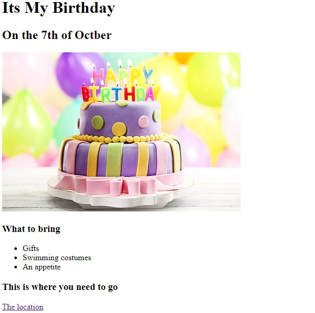

I am Andile Mabika
I am Frontend developer
Education: 2024 Web Development Bootcamp-Udemy
Projects I have created so far:
Ranking the best movies of all time
Birthday Invite Project

About Me
Contact Me